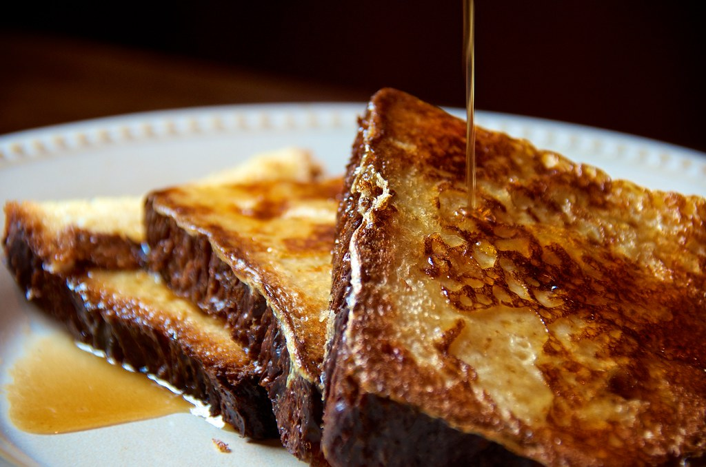

Home
French Toast

Description
French Toast is a delight all over the
globe. These sugary pieces of toast kickstart
anyones day.
Ingredients
- ⅔ cup milk
- 2 large eggs
- 1 teaspoon vanilla extract
- ¼ teaspoon ground cinnamon
- Salt
- 6 thick slices bread
- 1 tablespoon unsalted butter
Steps
-
Whisk milk, eggs, vanilla, cinnamon, and
salt together in a shallow bowl.
-
Lightly butter a griddle or skillet and heat
over medium-high heat.
-
Dunk bread in the egg mixture, soaking both
sides. Transfer to hot skillet and cook until
golden, 3 to 4 minutes per side.
-
Serve hot.